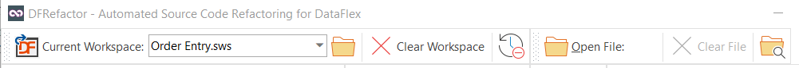
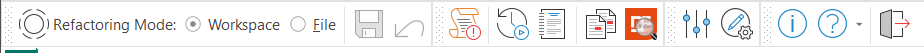
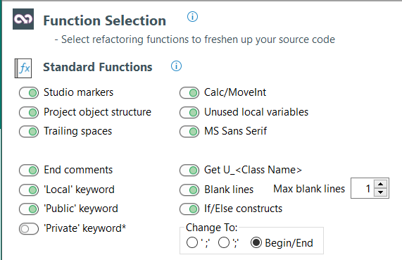
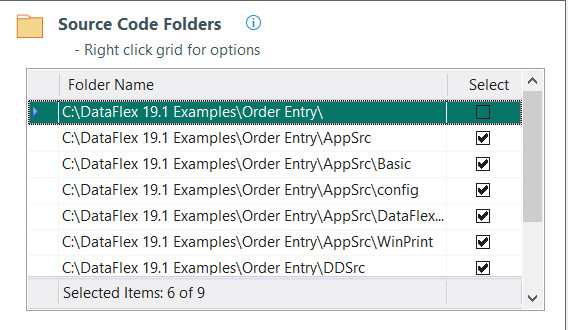
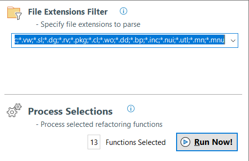

How It Works
1. Select Workspace
You first need to open a workspace. Open by clicking the Open Workspace toolbar button and select a .sws file. You can select a .sws file for any DataFlex version, as the version doesn't matter. Alternatively you can click the down arrow of the split button, to display a list of previously used workspaces. Even if you are going to work on a single file, the backup logic of DFReractor needs a selected workspace. You can also drag & drop a *.sws file to the program from Windows Explorer.
The full path to the selected .sws workspace file will be displayed when you hover the mouse over the control, and when the drop down button has been clicked.

Note: You can drag & drop *.sws files, folders, and source files onto the program from Windows Explorer.
Note: The interface has changes slightly and the path is not shown as displayed above. Instead you can hover the mouse over the file name and the full path will be displayed.
2. Workspace or File Mode?
The refactoring process can take place on either a series of source files, or a single file only. You select the mode by selecting either of the Workspace or File radio buttons in the toolbar.

If only a single file should be worked on, click the Open Source File button that is placed on top of the Workspace/File radio buttons. The Workspace/File mode will then automatically change to File mode.
3. Select Refactoring Routines
Select the checkboxes for the Refactoring Functions and Report Functons of choice. Pay special attention to the functions that have an asterisk (*) after the checkbox label.
See Refactoring Routines for details about each function.

4. Source Code Folders
If the Workspace mode has been selected you need to specify which folders should be included in the refactoring process. You can select folders from the list with the space bar. You can also right click the grid and then from the popup menu select the option to toggle the select state and add or delete a grid folder. It is also possible to drag & drop a folder to the program from Windows Explorer.
The grid will be unavailable if the File toolbar radio button has been selected because then only one source file will take part in the refactoring process. You can also drag & drop a source file to the program from Windows Explorer.

5. File Extensions Filter
Select a collection of file extensions from the drop down, or enter your own file extensions.
Every source file which has one of the selected extensions in all of the selected folders and all their subfolders will take part in the refactoring process.

6. Run Now
Important! Prior running any routine you should ALWAYS have made a backup of source code, and/or have checked in all changes to a version control program. There is no guarantee that everything goes according to plan once the Run Now button has been pressed. It is your responsibility to have your source code properly checked in and/or backed up.
The DFRefactor tool has backup logic built-in. (See also the Program Properties dialog), but you should also make sure you have taken the above safety measurements. The tool creates a 'DFRefactor Backup' folder in the workspace home (root) folder. It then creates a series of subfolders to match the selected folders and subfolders that is to be worked on.
Important: If you hit the Run Now button twice, the original backed up source file will not be overwritten with the one you just changed. The backup logic will not overwrite the backup copy for two days after the initial back up. If you run the tool again with the same workspace selected after two days, a new backup copy will be created.
Click the Run Now button in the lower right corner of the Refactoring view to begin the process. Note that some of the refactoring processes can take quite some time, but just sit back, relax, pour yourself a cup of coffee and wait until the work has finished.
There are actually three sorts of refactoring functions. First, there is the checkboxes in the Refactoring Functions group which control actual code changes. Then there is the Report Functions group with functions that do not make any changes to the code but merely creates a text report listing source files.
The Refactoring Functions group can further be divided into two groups; The first reads the source line by line and makes various changes depending on the functions selected.. The second group needs the editor object (Editor view) to carry out its task. You shouldn't need to distinguish between the two and the tool will automatically load source files to the editor when needed, make changes and saves the file. However, this is the reason the program changes to the Editor view when the Run Now button is pressed.